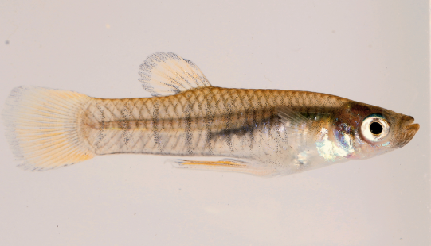

Systématique
- Ordre : Cyprinodontiformes
- Famille : Poeciliidae
- Genre : Neoheterandria
- Espèce : N. tridentiger

Neoheterandria tridentiger est une espèce robuste de micro-vivipare originaire du Panama, décrite par Canestrini en 1860. Son nom tridentiger fait référence à la structure tricuspide particulière de ses dents, une caractéristique anatomique distinctive au sein du genre. C'est l'un des membres les plus grands du groupe, bien que restant un "micro-poisson".
Le mâle mesure environ 2,5 cm, tandis que la femelle peut atteindre 4 cm. La coloration est à dominante olive ou grisâtre, avec une tache sombre bien visible sur le pédoncule caudal. Les écailles peuvent présenter des liserés foncés créant un effet de réseau discret sur les flancs.
Contrairement à N. elegans, cette espèce est nettement plus entreprenante et moins timide. Elle est très active et occupe tout l'espace de nage disponible. C'est un poisson sociable qui peut être maintenu en groupe dans un bac communautaire avec d'autres espèces paisibles et non prédatrices.
Neoheterandria tridentiger apprécie les aquariums riches en cachettes et en zones de nage libre. Il est relativement rustique et s'adapte à une large gamme de conditions, ce qui en fait un excellent choix pour les aquariophiles souhaitant s'initier aux vivipares sauvages. Il se montre pacifique envers les autres espèces mais les mâles sont d'une infatigable ardeur lors des parades nuptiales.
Mode : vivipare.
La reproduction est simple et prolifique. Contrairement à d'autres membres du genre pratiquant la superfétation stricte, N. tridentiger produit des portées plus classiques, bien que souvent étalées sur plusieurs jours. Une femelle peut libérer entre 10 et 20 alevins par portée.
Les nouveau-nés sont vigoureux et cherchent immédiatement refuge dans les plantes de surface ou les mousses. Ils acceptent rapidement les nourritures finement broyées, bien que les nauplies d'artémias favorisent une croissance optimale.
Dimorphisme sexuel : marqué. Le mâle est plus petit et possède un gonopode long et complexe. La femelle est beaucoup plus volumineuse, avec un ventre rebondi, surtout lors de la gestation.
Espérance de vie : 3 à 4 ans en captivité.
Cette espèce dispose d'une aire de répartition assez large sur les deux versants (Atlantique et Pacifique) du Panama. Elle fréquente une grande diversité d'habitats : ruisseaux forestiers, zones stagnantes, mares temporaires et même des eaux légèrement saumâtres près des embouchures.
L'eau de son milieu naturel est généralement dure et alcaline, avec une température comprise entre 22 et 28 °C. Cette plasticité écologique explique sa relative robustesse en aquarium. Le substrat est souvent composé de limon, de sable et de débris végétaux.
Répartition

Origine naturelle :
- Panama : Versants Pacifique et Atlantique (Zone du Canal, Rio Chagres, etc.).
- Localité type : Panama (sans précision supplémentaire dans la description originale).
- Espèce commune dans son aire de répartition naturelle au Panama.
Parfois disponible chez les éleveurs spécialisés, c'est l'un des vivipares sauvages les plus faciles à acclimater.
Paramètres de maintenance
Température : 22 à 28 °C; supporte bien les variations saisonnières.
pH : 7,0 à 8,5; préfère les eaux alcalines.
GH : 10 à 25 °dGH; demande une eau dure.
Courant : faible à modéré.
Volume conseillé : minimum 40-50 L pour un petit groupe mixte.
Régime alimentaire
Régime : omnivore.
C'est un mangeur opportuniste. En aquarium, il accepte tout type de nourriture : paillettes, granulés, ainsi que le congelé et le vivant (artémias, daphnies, vers de vase).
Un apport végétal (sous forme de paillettes à base de spiruline ou d'algues présentes dans le bac) est bénéfique pour son équilibre digestif.